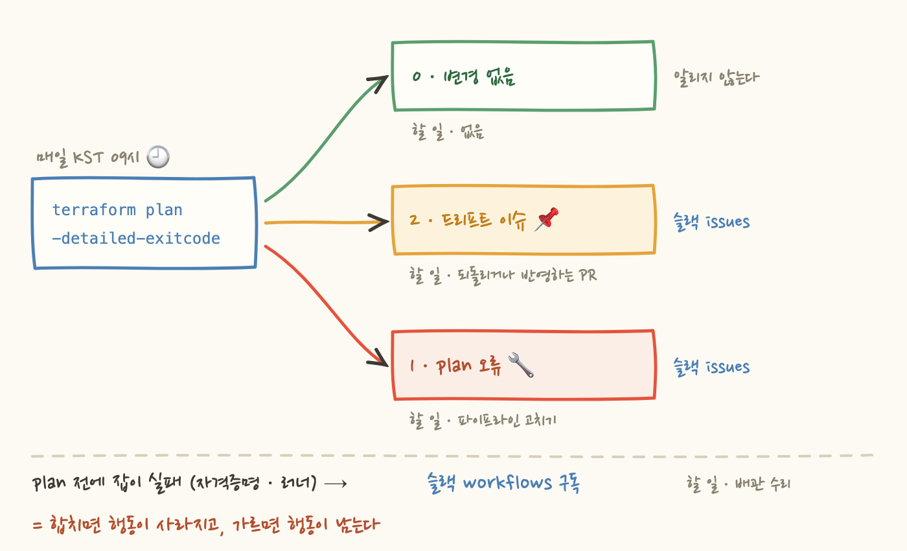
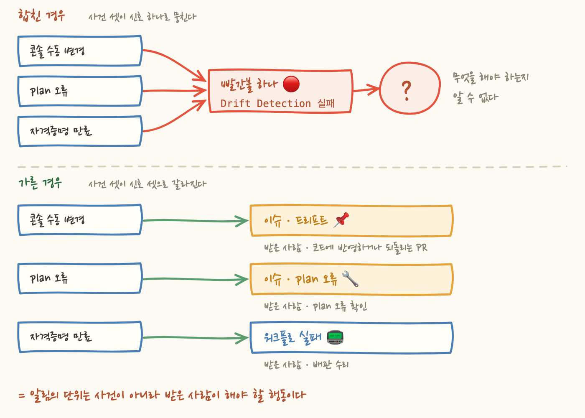

테라폼으로 AWS 인프라를 관리하는 저장소에 매일 아침 도는 점검 워크플로를 붙였어요. 흔한 방식대로 짰다면 아침 슬랙에 뜨는 건 빨간불 하나예요. Terraform Drift Detection 실패. 자, 지금 뭘 해야 하나요? 누가 콘솔에서 손댄 걸 되돌려야 하는 상황일 수도 있고, 읽기 전용 plan 역할의 자격증명이 만료돼서 점검 자체가 멈춘 것일 수도 있어요.
둘은 완전히 다른 일인데 알림이 똑같습니다. 알림 하나가 서로 다른 두 행동을 가리키면 그건 알림이 아니라 "로그를 열어보세요"라는 안내문이에요. 이 글은 그 빨간불을 어떻게 갈랐는지에 대한 이야기입니다.
먼저 드리프트 — 코드에 적힌 인프라와 실제로 돌아가는 인프라가 벌어진 상태 — 가 왜 매일 확인할 만한 일인지부터요. 장애 대응 중에 급해서 콘솔에서 보안그룹 규칙 하나를 열어뒀다고 해봐요. 코드에는 그 규칙이 없죠. 그러면 다음 apply 가 그 규칙을 조용히 되돌립니다. 예고도 없고, 되돌렸다는 기록도 사람이 읽는 곳에는 남지 않아요.
그 다음에 벌어지는 일이 고약해요. "어제까지 되던 게 오늘 안 되는데 아무도 배포한 게 없다"는 상황에서 원인 규명에만 몇 시간이 듭니다. 그냥 두면 벌어진 폭만큼 나중에 청구서로 돌아와요. 그래서 매일 한 번 확인합니다.
확인 수단은 terraform plan 이고, 열쇠는 -detailed-exitcode 플래그예요. 이 플래그를 붙이면 종료 코드가 두 값이 아니라 세 값이 됩니다.
여기서 plan 의 종료 코드로는 잡을 실패시키지 않는 것이 이번 설계의 전부예요. 2가 나오면 이슈를 만들고, 1이 나와도 같은 제목·같은 drift 라벨로 이슈를 만들되 본문을 바꿔요 — "파이프라인 자체가 깨져 있을 수 있습니다".
그럼 이 글 제목의 "고장은 실패로" 는 뭘까요. plan 까지 가보지도 못한 경우예요. 체크아웃, 역할 위임, init 이 깨지면 잡이 그냥 실패하고, 그건 이슈가 아니라 슬랙의 workflows 구독이 받습니다. plan 이 돌았으면 결과는 이슈로, plan 이 못 돌았으면 실패로 — 이게 세 갈래를 가르는 기준이에요. 필요한 행동이 다르니까 도착점도 다르게 만든 거예요.

도착점을 나눈다니까 알림 워크플로를 하나 더 만들 것 같지만, 정반대로 갔어요. 웹훅 시크릿도 없고 알림 전용 워크플로도 없습니다. GitHub Slack 앱의 구독만으로 신호를 갈라 받아요.
issues — 드리프트 이슈가 생겼다 → 콘솔 변경을 코드에 반영하거나 되돌리는 PR 을 올린다workflows — 워크플로 실행이 실패했다 → 러너·자격증명·apply 같은 배관을 고친다pulls / reviews — 리뷰 요청이 왔다 → 머지에 승인 1인이 필요하니 막힌 PR 을 푼다
배관을 새로 깔지 않은 이유는 단순해요. 알림 자체가 고장날 수 있는 부품을 늘리지 않으려고요. 웹훅 시크릿은 만료되고 알림 전용 워크플로는 조용히 실패해요. 그런데 알림이 조용히 실패하면 아무도 모르죠 — 알림이 없는 상태와 문제가 없는 상태가 구분되지 않으니까요.
cron 은 0 0 * * * 이에요. UTC 00:00, 그러니까 KST 09:00. 야간 배치라면 흔히 새벽 3시인데, 그렇게 하지 않은 건 의도한 선택이었어요.
드리프트는 즉시 대응해야 하는 사고가 아니라 "오늘 확인할 것"입니다. 그러니 업무 시작 직전에 돌려서, 출근해서 슬랙을 열면 오늘 처리할 목록이 이미 놓여 있게 만드는 게 맞아요. 대응할 수 없는 시간에 오는 알림은 신호가 아니라 소음이고, 더 나쁘게는 사람이 알림을 무시하는 습관을 만듭니다. 한 번 그 습관이 생기면 진짜 급한 알림도 같이 묻혀요.
알림을 이슈로 받기로 하면 새 책임이 하나 생겨요. 이슈를 닫는 책임이요. 이 저장소는 main 머지 시 dev 만 자동 반영하고, prod 는 사람이 plan 요약을 읽고 손으로 실행해요 — 그래서 머지와 prod 반영 사이에 시차가 생기죠. 그 시차를 알리는 게 apply 워크플로의 prod-pending 잡입니다. main 에 머지됐는데 prod 에 아직 반영되지 않은 변경이 있으면 이슈를 열고, 다음 머지에서 반영이 확인되면 코멘트를 남기고 자동으로 닫아요.
닫지 않으면 이슈가 배경 소음이 되고, 열려 있다는 사실 자체가 아무 의미도 갖지 않게 되거든요. 드리프트 이슈도 같은 제목의 열린 이슈가 있으면 새로 만들지 않고 코멘트만 덧붙여요. 같은 사실이 이슈 30개로 늘어나면 아무도 안 보니까요. 다만 이쪽은 자동으로 닫히지 않습니다 — PR 로 처리한 사람이 직접 닫아요. 열린 이슈 목록이 곧 지금 할 일 목록이라는 걸 유지하는 게 알림 설계의 절반이에요.
여기까지가 결국 한 문장으로 모여요. 알림을 설계하는 단위는 "무슨 일이 일어났는가"가 아니라 "받은 사람이 무엇을 해야 하는가"입니다. 두 사건에 필요한 행동이 다르면 알림 채널도 달라야 하고, 필요한 행동이 아예 없으면 알림을 만들지 말아야 해요(그래서 exit 0 은 어디에도 알리지 않습니다).

관찰 가능성이 "무엇이 일어났는지 알 수 있는 상태"라면, 알림 설계는 "무엇을 해야 하는지 알 수 있는 상태"예요. 이 저장소에서는 종료 코드 하나를 어디로 보내느냐가 그 차이를 만들었어요.